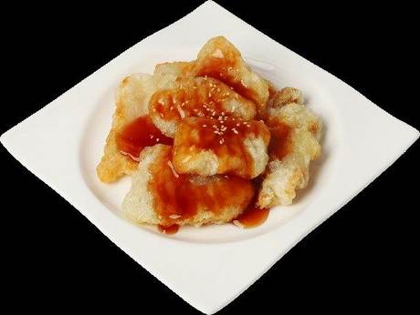
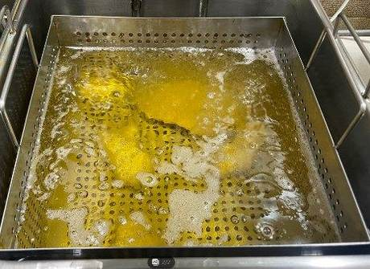
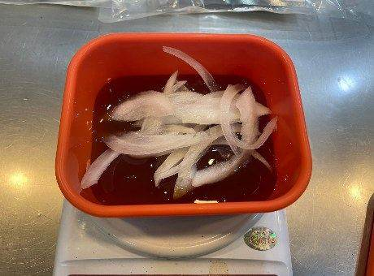
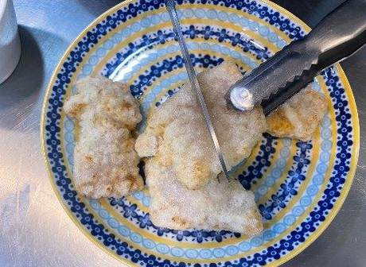
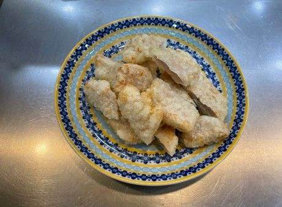
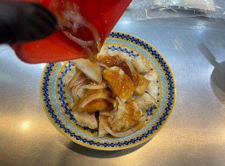
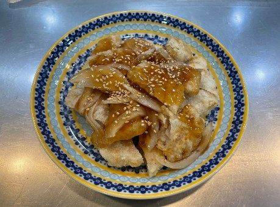
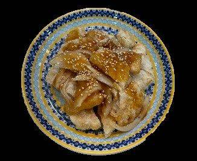

| 메뉴명 | 겉바속촉 꿔바로우 |
|---|---|
| 판매가격 | 8,500원 |
| 원재료 | 꿔바로우, 탕수육소스, 양파슬라이스, 볶음참깨 |
| 사용 부자재 | 덮밥접시 |
| 메뉴특징 | 바삭 쫀득 통등심 꿔바로우와 새콤달달한 소스가 어우러진 정통의 맛! |
조리방법

1
소분된 꿔바로우 2봉을 뜯어 180도 튀김기에서 5분간 튀긴다.
소분된 꿔바로우 2봉을 뜯어 180도 튀김기에서 5분간 튀긴다.

2
전자레인지 용기에 탕수육소스 100g, 양파슬라이스 20g을 담는다.
전자레인지 용기에 탕수육소스 100g, 양파슬라이스 20g을 담는다.

3
뚜껑을 덮고 전자레인지에 넣어 1분간 돌려 소스를 만든다.
뚜껑을 덮고 전자레인지에 넣어 1분간 돌려 소스를 만든다.

4
튀긴 꿔바로우는 기름을 털고 가위를 사용하여 반을 자른다.
튀긴 꿔바로우는 기름을 털고 가위를 사용하여 반을 자른다.

5
접시에 담는다.
접시에 담는다.

6
전체적으로 탕수육소스를 뿌린다.
전체적으로 탕수육소스를 뿌린다.

7
볶음참깨를 뿌려 완성한다.
볶음참깨를 뿌려 완성한다.

8
단무지와 함께 제공한다.
단무지와 함께 제공한다.